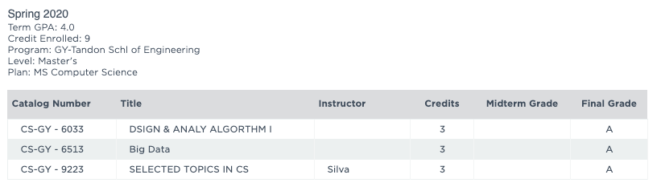

期末结束快半个月，实习也开始一周之后，拖延症严重的我终于来写年中总结了。
感觉来 NYU 读书应该是读本科以来课程 pressure 最轻松的日子了，相比大三无止尽的熬夜写项目，一学期只需要应付 3 门课程而且还有厉害的组员，这样的日子对我着实有一些清闲。

不过我觉得清闲地有一些过头了。
与之前相比，我的各种缺点也是更加明显。更懒、更拖延、更没有时间安排，得过且过。或许人一旦陷入了一种清闲的日子，就会渐渐被磨平棱角，没有了奋斗的动力。
我到底热爱什么呢？这是一年来我一直在问自己的问题。无所依，无所求，得过且过。我内心底是不喜欢这样的态度，可是我又找不到一个奋斗的目标。我所做的一切，意义在哪里呢？到研究生之前，我的生活其实一条笔直的直线，我不用考虑人生的分岔路，只是按部就班地走下去就好。但是现在不一样了，我发现我要自己选择我未来的生活。我要找到我喜欢的职业，找到我喜欢的爱人，找到我喜欢的生活。
可是，我喜欢什么呢？
我觉得我是不喜欢一成不变的生活，想要有一些色彩，但是我又找不到色彩应该是什么。我曾经很反感朝九晚五这样的工作日子，希望有更多自己的时间。不过自己的时间如现在这样真的有了，但我其实也没有好好利用。失去了所爱之事，内心变冷淡了，大概就是如此吧。
我发现自己开始花更多的时间去刷微博、b站、Reddit，变得越来越少自己去思考一些东西。这对于我并不有益。说来说去，其实还是没有一个目标吧。毛毛有给我一些不错的建议，比如开始坚持一些小的目标，锻炼自己的自制力。我的确可以开始尝试，比如：
- 每天早上起床后背100个单词。
- 每天晚上下班后刷题前自由 coding 时间。
- 每天刷题完后看书半小时。
但这没有解决最重要的问题：我的人生目标是？虽然一直在说那件事情对于我的影响很大，这其实也是一种逃避，不愿意走出来，不愿意重新拥有生活的希望。没有生活的希望其实挺可怕的，我现在仍然觉得，即便现在离开人世并没有什么不妥，也不会再 care 其他人的影响，这大概就是因为没有希望吧。
其实挺难受的。
挺想找到一点点生活的意义的。
我究竟，应该成为一个怎样的人呢。